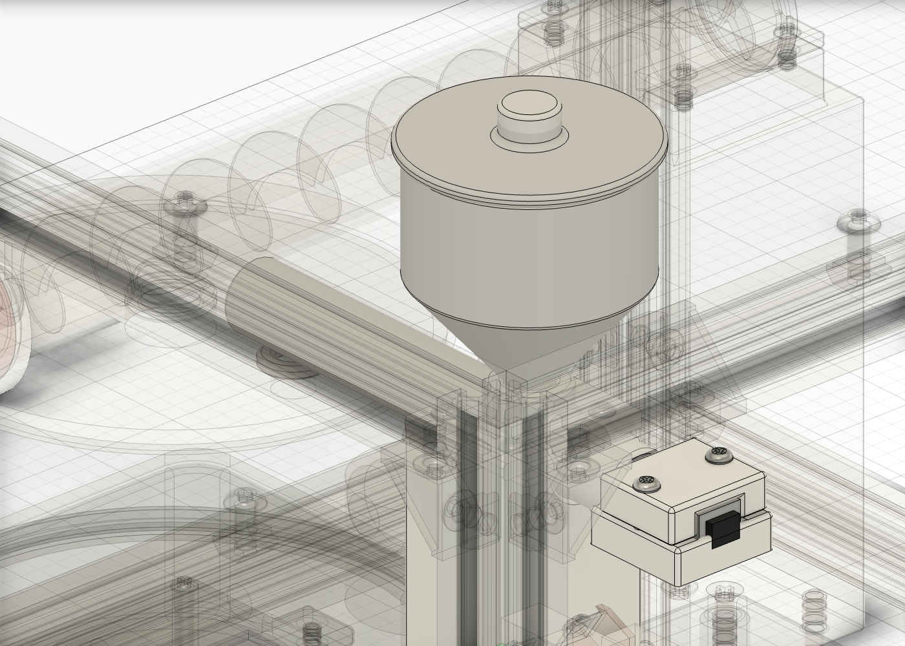
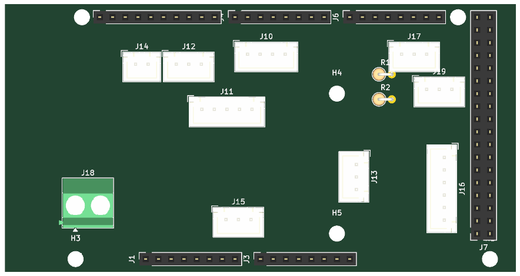
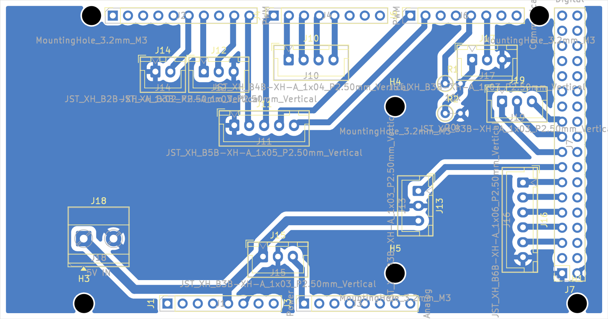

0%ทั้งรอบ
—
—
เหลือในขั้นนี้—
เสร็จทั้งรอบอีก—
ล้างแล้ว—
ต้องทำอะไรต่อ—
pH น้ำล้าง—เป้า — · หัววัด —
เม็ดเจล (ประมาณ)—ขนาด —
สารละลายในถังกรด—หยดแล้ว — · ละลาย —
อัตราหยด—ต่อเข็ม —
อุปกรณ์
— · ค่าปริมาณมาจากตัวจำลอง — เครื่องจริงรู้แค่ 3 จุดจากเซนเซอร์ระดับ
ผังการทำงาน
pH ระหว่างล้าง
บันทึกระบบ
สั่งงาน
เริ่มได้เมื่อสถานะ IDLE หรือ DONE · ปุ่มเขียวหน้าเครื่องทำงานเหมือนกัน · E-stop ตัดไฟ 12 V มอเตอร์ด้วยฮาร์ดแวร์
ความเร็วตัวจำลอง
—
×600 = 1 วินาทีจริงเท่ากับ 10 นาที (ทั้งรอบ ~9 ชม. ใช้ ~1 นาที)
สูตร
—
🌱 เลือกสูตรตามพืช
ทดสอบทีละตัว
ใช้ตรวจสายไฟ ทิศหมุน และค่า PWM ต่ำสุดที่มอเตอร์ยังหมุน ก่อนใส่สารเคมีจริง · พัดลมกวนถังกรดถูกบังคับ ≥ 128 (50 %)
ก่อนเดินเครื่องครั้งแรก
- E-stop: กดแล้วมอเตอร์ทุกตัวหยุด, หน้าเว็บขึ้น E-STOP
- ปั๊มหยด: หมุนทางที่ดูดจากถังกรดไปหัวเข็ม (กลับขั้วถ้าผิด)
- สกรูป้อนผง: ผงไหลลงช่องตรงถังกรด ไม่ค้างในท่อ
- พัดลมกวนถังกรด + มอเตอร์กวนห้องก่อเจล: แท่งกวนหมุนตาม ไม่กระโดด
- วาล์ว 1": เปิด/ปิดได้ ไม่รั่ว (ทดสอบด้วยน้ำเปล่า)
- ปั๊มสเปรย์: น้ำออกครบ 3 หัว ไม่กระเด็นออกนอกถาด
- เซอร์โวเทถาด: 10° = ราบ, 120° = เทหมด ไม่ชนโครง
- พัดลมกล่องไฟ: หมุนทันทีที่เปิดเครื่อง
บันทึกผลรอบนี้
การพองตัว (%) = (น้ำหนักหลังแช่ − น้ำหนักแห้ง) ÷ น้ำหนักแห้ง × 100 · งานวิจัยเดิม: ไบโอชาร์ 2 % ได้ 605 %
สรุปตามสัดส่วนไบโอชาร์
ขนาดเม็ดเฉลี่ย (mm) ± SD
ผลทั้งหมด ดาวน์โหลด CSV
🪴 ทดลองปลูกเปรียบเทียบ
หัววัด pH
- จุ่มหัววัดในบัฟเฟอร์ pH 7 รอค่านิ่ง 1 นาที → กด "จำค่า pH 7"
- ล้างหัววัด จุ่มบัฟเฟอร์ตัวที่ 2 → เลือกค่า กด "จำค่า"
- กด "ส่งค่าสอบเทียบ"
V = —
—
—
—
สกรูป้อนผง
- ใส่ผงในถังพัก วางถ้วยบนตาชั่งใต้ช่องออก
- สั่งเดิน 60 วินาที (30 rpm = 30 รอบ)
- ชั่งน้ำหนัก → ใส่ค่า → ระบบคำนวณ g/rev
—
—
ปั๊มหยด
- ใส่น้ำเปล่าในถังกรด วางกระบอกตวงใต้หัวเข็ม
- เดินปั๊มที่ PWM ปัจจุบัน 60 วินาที แล้วตวง mL
- ระบบคำนวณ PWM ใหม่ (สมมติอัตราไหลแปรผันตาม PWM − 30)
—
—
น้ำเปล่าไหลเร็วกว่าสารละลายไคโตซาน 6 % ที่หนืด — ทวนซ้ำด้วยสารละลายจริงอีกครั้ง
—
pH —
🟤 0 เม็ด
เติมวัตถุดิบ
🥄 ไคโตซาน—
⚫ ไบโอชาร์—
🧴 กรด 1 M—
🫧 NaOH—
🚰 น้ำล้าง—
🗑️ น้ำทิ้ง—
☀️ ถาดตาก—
เดินเครื่อง
ความเร็ว
ชิ้นส่วน
จอสัมผัส 7″ เสมือน
โค้ดหน้าจอตัวจริง (ESP32 + LVGL) รันในเว็บ · แตะ/คลิกได้เหมือนจอที่หน้าเครื่อง · ต่อกับเครื่องจำลองหรือเครื่องจริงทาง USBกำลังโหลดจอ…
✨ อัปเดตล่าสุด · v8.9 (15 ต.ค. 2026)
⚫ ชุดป้อนไบโอชาร์แยกถัง ≈ 45 g (4 รอบ) + สกรู Ø12 + มอเตอร์ N20 · ไบโอชาร์ = 2 % ของน้ำหนักกรด + ไคโตซาน ≈ 10.6 g/รอบ ตั้ง 0–3 % บนหน้าจอ ไม่ต้องผสมผงเอง
🟩 บอร์ด shield Megaปริ้นหน้าเดียว ทำเองได้ · ขั้วต่อ JST ล็อก 8 ชุด · ไม่ต้องเดินจัมเปอร์
📌 ย้ายขา Megaให้เดินลายหน้าเดียวได้ · เฟิร์มแวร์ + ผังสายไฟอัปเดตแล้ว (ตารางด้านล่าง)
🧊 3 มิติแท่งกวนหมุน · เม็ดไหลออกทีละเม็ดตอนเปิดวาล์ว · ถังไบโอชาร์
💰 งบประมาณ—
ภาพเครื่อง

ชุดป้อนไบโอชาร์ (v8.9)

บอร์ด shield สำหรับ Mega ⬇ ลายปริ้น 1:1 (PDF)


| ขั้วต่อ | ไปที่ | pin 1 → pin สุดท้าย |
|---|---|---|
| J10 · 4P | MDD10A | D6 PWM2 · D5 PWM1 · D4 DIR1 · D3 DIR2 |
| J11 · 5P | MDD3A | GND · D8 M2A · D7 M1A · D14 M1B · D15 M2B |
| J12 · 3P | MOSFET ×2 | D11 ไบโอชาร์ · D9 กวนถังขึ้นรูป · GND |
| J14 · 2P | เซอร์โว | GND · D12 |
| J13 · 3P | รีเลย์วาล์ว | D40 · GND · 5V |
| J15 · 3P | หัววัด pH | 5V · GND · A0 |
| J16 · 6P | แผงหน้า | D42 START · D44 STOP · D46 E-stop · D48 ไฟ START · D50 ไฟ STOP · GND |
| J17 · 3P | จอ ESP32 | TX 3.3 V (แบ่งแรงดัน 10k/20k) · RX1 · GND |
| J18 | ไฟ 5V จาก BUCK5 | + · − |
ใบสั่งซื้อ (BOM) ⬇ CSV
แผนผังสายไฟ